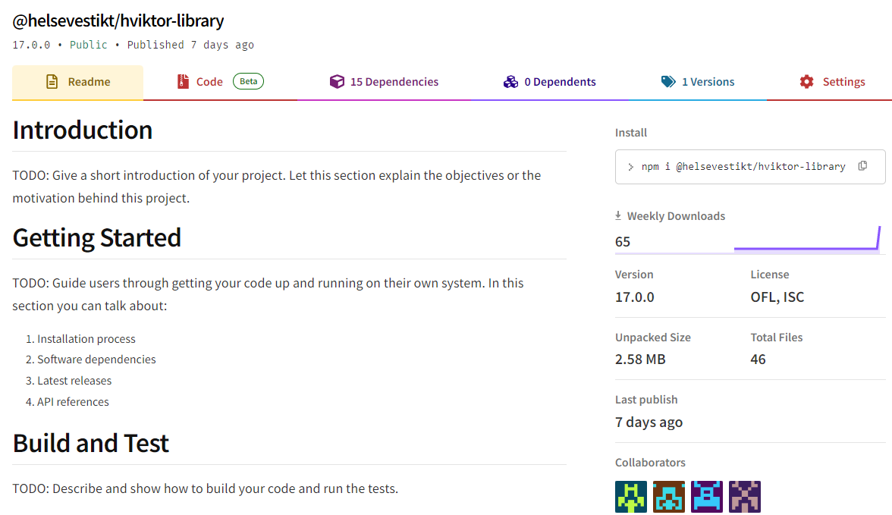

1. Opprett et nytt prosjekt med Angular
💎 npm install -g @angular/cli@17.2.2
💎 ng new my-app
💎 Would you like to add Angular routing? Yes
💎 Which stylesheet format would you like to use? SCSS

2. Legg til primeng i prosjektet
💎 Gå inn i prosjektet du opprettet: cd my-app
💎 npm install primeng@17.8.0
💎 npm install primeicons
3.Legg til Hviktor fra npm
💎 Stilfilene og fontene for Hviktor er nå tilgjengelig fra npm @helsevestikt/hviktor-library.
💎 legg til i prosjektet ditt: npm i @helsevestikt/hviktor-library

5. Oppdater angular.json
💎 Oppdater angular.json med:
"styles": [
"node_modules/primeicons/primeicons.css",
"node_modules/@helsevestikt/hviktor-library/styles/lara-light-blue.scss",
"node_modules/@helsevestikt/hviktor-library/styles/prime-theme.scss",
"node_modules/primeng/resources/primeng.min.css",
"node_modules/@helsevestikt/hviktor-library/styles/css-reset.scss",
"node_modules/@helsevestikt/hviktor-library/styles/base.scss",
"node_modules/@helsevestikt/hviktor-library/styles/styles.scss",
"src/styles.scss"
],
6. Legg til BrowserAnimationsModule
💎 For at enkelte prime-komponentet skal fungere må du importere BrowserAnimationsModule i app.modules filen.

7. Legg til primeng-komponenter i app.module
💎 Primeng komponentene som du skal bruke i prosjektet, må legges til og importeres i app.module.ts-filen
💎 Eksempel ved knapp: